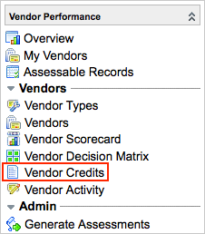

Vendor Ticketing
| |
Note: This article applies to Fuji and earlier releases. For more current information, see Vendor Ticketing at http://docs.servicenow.com
The ServiceNow Wiki is no longer being updated. Visit http://docs.servicenow.com for the latest product documentation. |
1 Overview
Vendor ticketing helps establish stronger relationships between vendors, incidents, and SLAs by providing:
- An easy way to pause contract or service commitment SLAs and start vendor-oriented SLAs from the Incident form.
- A view of all incidents opened against a vendor's services or products on the vendor record.
- The ability to start vendor-oriented SLAs from different vendor events on the Incident form.
Additionally, vendor ticketing adds the Vendor Credits module to the Vendor Performance application menu. This module enables vendor managers to track credits that a vendor owes due to breached service contracts, and to view any unused credits.
Vendor ticketing is available starting with the Dublin release.
2 Roles
Users with the following roles can use vendor ticketing features.
| Role Title | Role Name | Description |
|---|---|---|
| Vendor manager | vendor_manager | Vendor managers are involved with an organization's vendor management process and can configure vendor records. They can also manage vendor credits. |
| ITIL user | itil | ITIL users perform basic technical operations in the system and can add vendor information to incidents. |
| Portfolio administrator | portfolio_admin | Portfolio administrators, activated by Service Portfolio Management, can view, create, and delete SLA records and use all vendor ticketing features included with SLAs. |
3 Menus and Modules
Vendor ticketing adds the following module to the Vendor Performance application menu. For descriptions of the other modules in this menu, see Vendor Performance.
|  |
|
{kind=link}
4 Activating Vendor Ticketing
An administrator can activate the Vendor Ticketing plugin to access the functionality. Additional plugins will be activated if they are not already active.
| Click the plus to expand instructions for activating a plugin. |
|---|
|
If you have the admin role, use the following steps to activate the plugin.
|